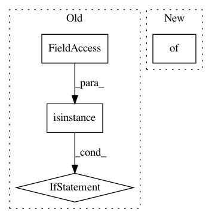

10d7ece1c34c5533262a54d20d974a3d04f0b7ce,src/sdk/pynni/nni/compression/tensorflow/compressor.py,Compressor,__init__,#Compressor#Any#Any#Any#,79
Before Change
def __init__(self, LayerWrapperClass, model, config_list):
assert isinstance(model, tf.keras.Model)
if isinstance(model, tf.keras.Sequential):
raise ValueError("NNI model compression does not support `Sequential` model for now")
self.validate_config(model, config_list)
self.bound_model = model
self.wrappers = []
After Change
self._original_model = model
self._config_list = config_list
self._wrapper_class = LayerWrapperClass
self._wrappers = {} // key: id(layer) , value: Wrapper(layer)
self.compressed_model = self._instrument(model)
self.wrappers = list(self._wrappers.values())
In pattern: SUPERPATTERN
Frequency: 3
Non-data size: 4
Instances
Project Name: microsoft/nni
Commit Name: 10d7ece1c34c5533262a54d20d974a3d04f0b7ce
Time: 2020-09-15
Author: 40699903+liuzhe-lz@users.noreply.github.com
File Name: src/sdk/pynni/nni/compression/tensorflow/compressor.py
Class Name: Compressor
Method Name: __init__
Project Name: chainer/chainercv
Commit Name: 4e25beb116336c4c7c1462b752f38937cae1a2db
Time: 2017-05-13
Author: yuyuniitani@gmail.com
File Name: chainercv/links/model/faster_rcnn/faster_rcnn.py
Class Name: FasterRCNNBase
Method Name: __call__
Project Name: hanxiao/bert-as-service
Commit Name: 7dcdaf7091798a01341d7b94de0880f8e535608e
Time: 2018-11-26
Author: hanhxiao@tencent.com
File Name: service/server.py
Class Name: BertServer
Method Name: __init__